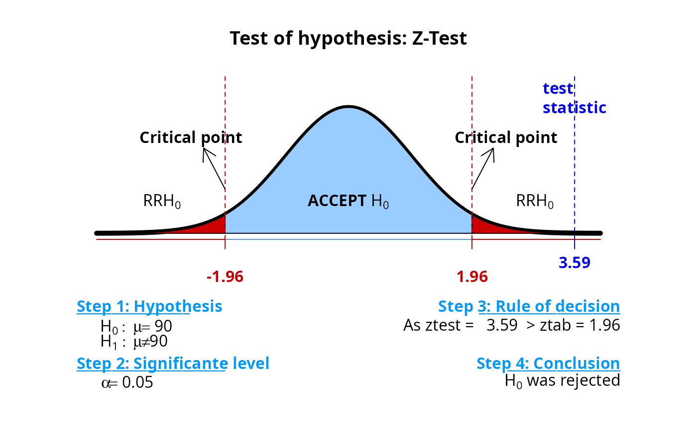

Performs hypothesis testing for various parameters of one or more populations
Usage
th(
x,
y = NULL,
test = "ztest",
h0,
prop = FALSE,
delta = 0,
p,
pa,
alternative = c("two.sided", "L", "less", "greater", "G"),
alpha = 0.05,
exact = TRUE,
correct = FALSE,
paired = FALSE,
plot = FALSE,
...
)Arguments
- x
R object. See in details.
- y
an optional (non-empty) numeric vector of data values.
- test
character value. The options are:
"ttest","ztest","ptest","chitest","ftest","anova","friedman","kruskal","mann whitney".- h0
numeric value. The hypothesized parameter.
- prop
a logical indicating whether you want to use the proportion test of not. Default is
prop=FALSE.- alternative
a character string specifying the alternative hypothesis, must be one of "two.sided" (default), "greater" or "less". You can specify just the initial letter.
- alpha
significance level of the test
- exact
a logical indicating whether you want to use the exact test or not. Default is
exact=TRUE.- correct
a logical indicating whether Yates' continuity correction should be applied where possible. This argument must be used when
exact = FALSE.- paired
a logical indicating whether you want a paired t-test. Valid only for
test="ttest".- plot
a logical indicating whether you want a graph indicating the regions of rejection or not of the null hypothesis, as well as the test decision.
Examples
# Null hypothesis
nullhyp <- h0 <- 90
# Simulation
set.seed(10)
data <- rnorm(30, 100, 10)
# Test of hypothesis
th(data, h0 = h0, sd = 10, plot = TRUE)
#> Warning: font metrics unknown for character 0x0a in encoding latin1
#> Warning: font metrics unknown for character 0x0a in encoding latin1

#>
#>
#> One Sample z-test (Two-sided test)
#>
#> Step 1: Hypothesis
#> H0: mu = 90
#> H1: mu != 90
#>
#> Step 2: Significance level
#> alpha = 0.05
#>
#> Step 3: Rule of decision
#> If |ztest| > |ztab| => Reject H0!
#> ztest - test statistic; ztab - critical point
#> So...
#> As ztest = 3.59 > |ztab =1.96 then reject H0!
#> Otherwise...
#> As p-value = 0.00033 < alpha = 0.05 then reject H0!
#>
#> Step 4: Conclusion
#> We observed by the Z Test that the null hypothesis was rejected, at the significance level of 5 % probability